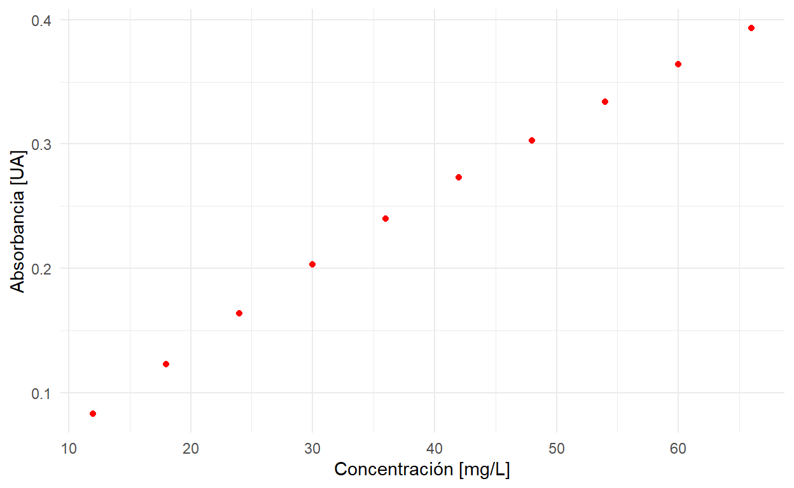
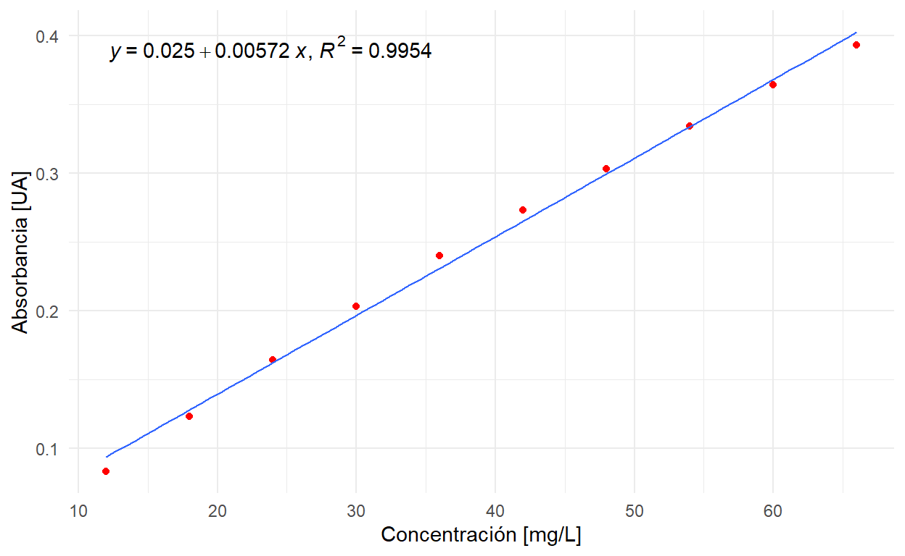
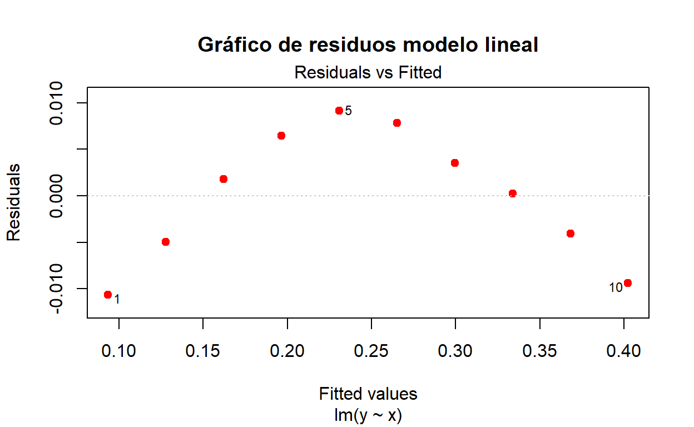
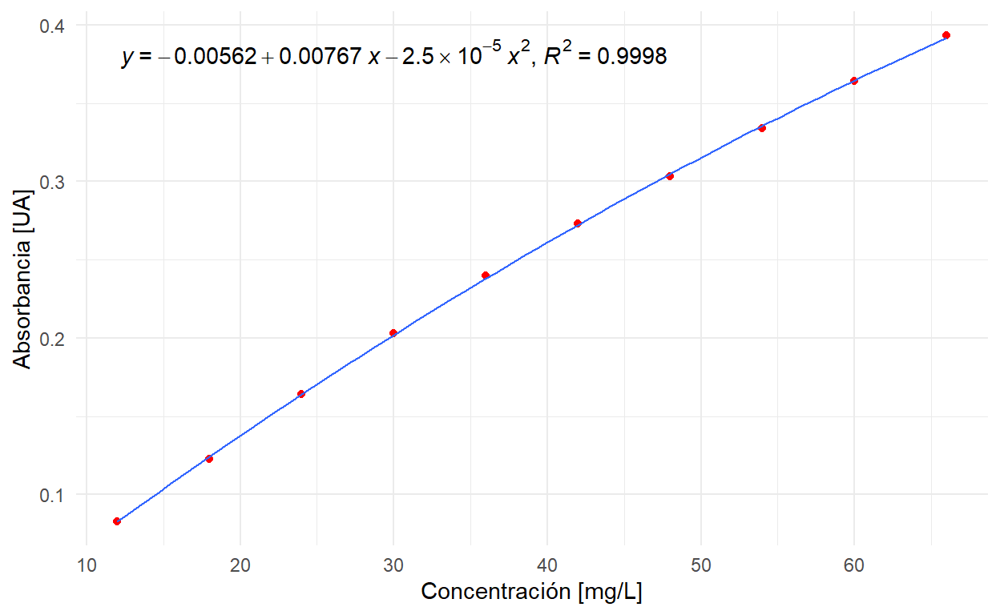
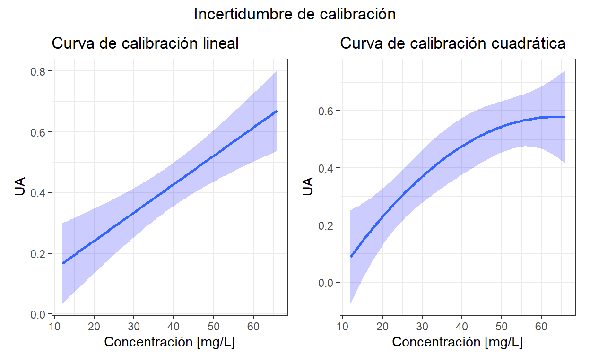
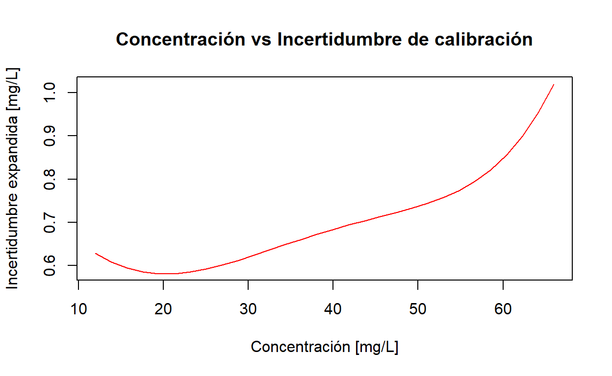
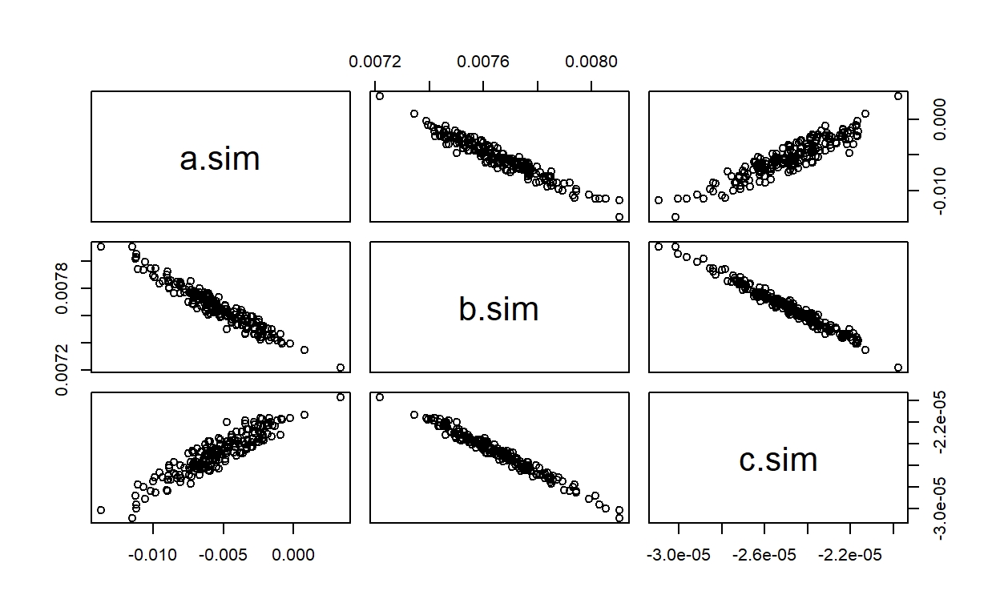
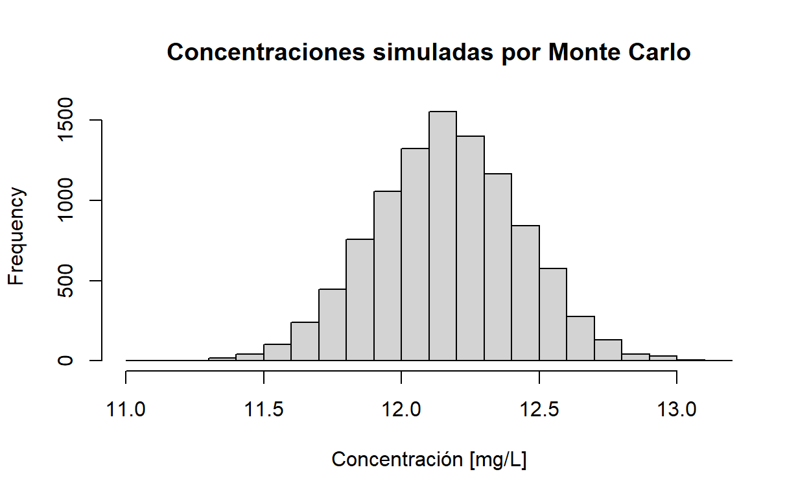

Se comparan tres métodos para estimar la incertidumbre de una calibración no lineal: Norma ISO 8466-2, GUM y Método de Monte Carlo
En un post anterior revisamos cómo estimar la incertidumbre de la concentración de una muestra problema, cuando ésta ha sido obtenida interpolando la señal instrumental en una curva de calibración lineal.
La expresión es relativamente simple y vimos también cómo podemos implementarla en el lenguaje de programación R a través del package chemCal.
Sin embargo, la vida no es tan sencilla. Recoradará estimad@ lector@ que está bastante documentada la presencia de desviaciones de la linealidad a altas concentraciones, fenómeno muy conocido en los métodos espectrofotométricos (Ley de Lambert-Beer). La severidad de estas desviaciones varía en función del detector, el analito y otros factores físico-químicos del sistema de medición.
Cuando existen estas desviaciones y deseamos llevar a cabo un test de linealidad, es muy probable que el test rechace el modelo lineal, por lo tanto, no podemos estimar la incertidumbre de calibración asumiendo este modelo. Si bien es cierto podemos reducir el rango lineal y diluir la muestra problema que está fuera del rango, la operación de dilución introduce nuevos errores (incluso errores humanos de transcripción bastante frecuentes).
Una alternativa válida sería utilizar un modelo de calibración que capture esta no linealidad evitando así la dilución de la muestra, por lo tanto el problema se reduce a:
¿Cómo estimar la incertidumbre de una muestra problema que ha sido obtenida a través de una curva de calibración no lineal?
Sin embargo, de esta pregunta se desprende al mismo tiempo otra interrogante:
¿Cuál modelo de calibración no lineal utilizaré?
Existen varios modelos de calibración no lineal:
Por lo tanto, no existe una respuesta completamente correcta desde la prespectiva estadística, pues un modelo cuadrático sería tan válido como un polinomio cúbico. Desde el punto de vista químico podríamos preguntarnos ¿qué sentido químico tiene una curva de calibración polinómica de grado 5? ¿Son interpretables los parámetros del modelo? En un modelo lineal como el de Lambert-Beer: \(y = \beta_{0} + \beta_{1}x\) la pendiente de la curva de calibración tiene una interpretación química: es el producto entre coeficiente de extinción molar y la longitud de la celda:
\[ \underbrace{A}_\text{y} = \underbrace{\epsilon \cdot b}_\text{$\beta_{1}$} \cdot \underbrace{C}_\text{x} \tag{1} \] Pero recuerde este sabio consejo de un monstruo de la estadística aplicada:
“All models are wrong, but some are useful” – George Box
Por lo tanto, tenemos que tomar una decisión. Y obviamente, como soy el autor de este humilde post, ya la tomé por Ud. En este artículo estimaremos la incertidumbre de calibración de un modelo polinómico de grado 2, también conocido como modelo cuadrático.
Nota: Desde el punto de vista estrictamente estadístico los modelos polinómicos, como la calibración cuadrática, son también modelos lineales ya que los coeficientes del modelo son lineales
\[y = \beta_{0} + \beta_{1}x + \beta_{2}x^2 + \epsilon\]
En cambio, en un modelo del tipo exponencial:
\[y = \beta_{0}\cdot e^{\beta_{1}x}\]
El coeficiente \(\beta_{1}\) no es una función lineal.
En este post ejemplificaremos y compararemos tres métodos de estimación de incertidumbre de calibración:
Norma ISO 8466-2:2001 Water quality – Calibration and evaluation of analytical methods and estimation of performance characteristics – Part 2: Calibration strategy for non-linear second-order calibration functions.
Método GUM
Método de Monte Carlo (Suplemento 1 ISO-GUM)
Implementaremos todos los métodos en el lenguaje de programación R, explicando paso a paso el código fuente con el fin de que Ud. obtenga los mismos resultados, es decir, un análisis reproducible.
Para ejemplificar los cálculos, utilizaremos los datos de calibración indicados en el ejemplo de la sección 7 de la norma ISO 8466-2. El siguiente código R nos permite ingresar los datos manualmente:
# Ingresamos los datos de calibración de la sección 7 de la norma ISO 8466-2
# x: concentración en mg/L
# y: Absorbancia [UA]
x <- c(12, 18, 24, 30, 36, 42, 48, 54, 60, 66)
y <- c(0.083, 0.123, 0.164, 0.203, 0.240, 0.273, 0.303, 0.334, 0.364, 0.393)
d <- data.frame(x, y) # creamos un data frame con las variables x e y (esto es
# análogo a una matriz de datos en Excel con dos columnas)
A continuación graficamos la curva de calibración con la librería ggplot2:
library(ggplot2) # cargamos la librería ggplot2
theme_set(theme_minimal()) # esto es sólo por una cuestión estética del gráfico
ggplot(d, aes(x = x, y = y)) +
geom_point(color = 'red') +
xlab('Concentración [mg/L]') +
ylab('Absorbancia [UA]')

Mmm… no sé Ud. pero yo veo una leve curvatura. Como lo vimos en un post anterior llevaremos a cabo un análisis estadístico básico para evaluar si el modelo de calibración lineal es adecuado, o si nos inclinamos por la hipótesis de no linealidad.
Como no tenemos replicados de cada punto de calibración, haremos un Test de Linealidad de Mandel. Lo primero, es ajustar un modelo lineal a los datos \(y = a + bx\):
fit.lineal <- lm(y ~ x, data = d) # ajustamos un modelo lineal y lo guardamos
# con el nombre fit.lineal
parameters::model_parameters(fit.lineal) # parameters::model_parameters()
Parameter | Coefficient | SE | 95% CI | t(8) | p
--------------------------------------------------------------------
(Intercept) | 0.03 | 5.83e-03 | [0.01, 0.04] | 4.29 | 0.003
x | 5.72e-03 | 1.37e-04 | [0.01, 0.01] | 41.80 | < .001 # simplemente nos ayuda
# a visualizar el análisis estadístico
# en una forma más ordenada
Esta tabla nos dice que el intercepto del modelo es \(a = 0.0250303\) y la pendiente \(b = 0.0057172\). Note el alto coeficiente de determinación \(r^{2} = 0.9954\) lo cual indica que es un buen modelo. El coeficiente de correlación es \(r = 0.998\) que si bien es un dato a considerar, no es una prueba formal de linealidad.
La siguiente figura muestra el ajuste lineal sobre los datos de calibración:
library(ggpmisc) # para escribir ecuaciones dentro del gráfico
ggplot(d, aes(x = x, y = y)) +
geom_point(color = 'red') +
geom_smooth(method = 'lm', se = F,
size = 0.5) + # dibuja la curva de calibración lineal
xlab('Concentración [mg/L]') +
ylab('Absorbancia [UA]') +
stat_poly_eq(aes(label = paste(stat(eq.label), stat(rr.label),
sep = "*\", \"*")),
formula = y ~ x,
parse = TRUE,
rr.digits = 4)

Se observa que el ajuste lineal no es un buen modelo, pues no captura la curvatura de los datos a pesar del alto coeficiente de correlación. Esto se oberva más claramente si obervamos el gráfico de residuos:
plot(fit.lineal, which = 1, add.smooth = F, pch = 19, col = 'red',
main = 'Gráfico de residuos modelo lineal')

La evidencia en contra del modelo lineal es abrumadora, el gráfico muestra claramente un patrón en los residuos que indica que el modelo lineal no es adecuado. Sin embargo, a pesar de la evidencia, haremos el Test de Mandel para “comprobar” esta hipótesis. Para aplicar el Test de Mandel debemos ahora ajustar el modelo cuadrático y compararlo con el modelo lineal. Para ser consistentes en la notación de la norma ISO 8466-2, definiremos el modelo de calibración cuadrático como:
\[ y = a + bx + cx^2 \]
fit.nolineal <- lm(y ~ x + I(x^2), data = d) # ajuste cuadrático y los guardamos
# con el nombre fit.nolineal
parameters::model_parameters(fit.nolineal)
Parameter | Coefficient | SE | 95% CI | t(7) | p
-----------------------------------------------------------------------
(Intercept) | -5.62e-03 | 2.47e-03 | [-0.01, 0.00] | -2.27 | 0.057
x | 7.67e-03 | 1.42e-04 | [ 0.01, 0.01] | 54.01 | < .001
x^2 | -2.50e-05 | 1.79e-06 | [ 0.00, 0.00] | -14.01 | < .001Se obtiene una tabla similar que la del modelo lineal, con la adición del coeficiente que acompaña al \(x^2\): I(x^2) \(= -2.504\times 10^{-5}\). Note que el coeficiente de determinación del modelo cuadrático es mayor que el del modelo lineal. Esto siempre se cumplirá, lo que hace el Test de Mandel es discernir si esta “mejora” en el modelo es “significativa”.
La siguiente figura muestra el ajuste no lineal, el cual captura mucho mejor la curvatura de los datos:
ggplot(d, aes(x = x, y = y)) +
geom_point(color = 'red') +
geom_smooth(method = 'lm', # dibuja la curva de calibración no lineal
se = F,
formula = y ~ x + I(x^2), size = 0.5) +
xlab('Concentración [mg/L]') +
ylab('Absorbancia [UA]') +
stat_poly_eq(aes(label = paste(stat(eq.label), stat(rr.label),
sep = "*\", \"*")),
formula = y ~ x + I(x^2),
parse = TRUE,
rr.digits = 4)

Ok, aplicamos el Test de Mandel con el comando anova:
parameters::model_parameters(anova(fit.lineal, fit.nolineal))
Parameter | RSS | Sum_Squares | df | df (error) | Mean_Square | F | p
--------------------------------------------------------------------------------------------------
Model 1: y ~ x | 4.44e-04 | | | 8 | | |
Model 2: y ~ x + I(x^2) | 1.53e-05 | 4.29e-04 | 1 | 7 | 4.29e-04 | 196.29 | < .001El p-value del test de Mandel es \(2.23\times 10^{-6}\), el cual de acuerdo a la interpretación tradicional, indica que el modelo lineal no es adecuado para los datos de calibración.
Procedamos, entonces, a estimar la incertidumbre de la concentración \(\hat{x}\) de una muestra problema, cuyo valor fue obtenido interpolando la señal instrumental en el modelo de calibración no lineal.
Desde el punto de vista metrológico, la aproximación que indica esta norma es similar a lo que dicta la guía ISO GUM clásica, es decir, estima la incertidumbre a partir de un modelo de medición \(y = f(x)\). La “gracia” de esta norma es que nos ahorra tinta, pues la ecuación de incertidumbre ya está “algebraicamente manipulada”. No entraremos en los detalles de las primeras secciones de la norma los cuales estudian el comportamiento de la curvatura, es decir, si será posible encontrar un máximo o un mínimo, lo cual es clave en la utilidad del modelo cuadrático como función de calibración. Esto es importante porque recuerde que una función parabólica tiene dos soluciones, si existiera un máximo o un mínimo en el rango de trabajo, el modelo cuadrático no puede ser utilizado como función de calibración.
La siguiente ecuación calcula la incertidumbre expandida \(I(\hat{x}) = U_{\hat{x}}\) de la concentración de la muestra problema \(\hat{x}\), interpolada en la curva de calibración no lineal \(y = a + bx + cx^2\). Corresponde a la ecuación (27) de la norma:
\[ I(\hat{x}) = \frac{s_{y} \cdot t_{n - 3,\, 95\%}}{b + 2c\hat{x}} \cdot \sqrt{\frac{1}{N} + \frac{1}{\hat{N}} + \frac{(\hat{x} - \overline{x})^2 \, Q_{x^4} + \left(\hat{x}^2 - \frac{\sum x_{i}^{2}}{N} \right)^2 Q_{xx} - 2(\hat{x} - \overline{x}) \left(\hat{x}^2 - \frac{\sum x_{i}^{2}}{N} \right) Q_{x^3}} {Q_{x^4} Q_{xx} - \left( Q_{x^3} \right)^2}} \]
donde:
\[ s_{y} = \sqrt{\frac{\sum (y_{i} -\hat{y})^2}{N - 3}} \]
\(y_{i}\) es la respuesta experimental observada del estándar \(i\), \(\hat{y}\) es la respuesta instrumental que predice el modelo para el mismo estándar \(i\), por lo tanto \(e_{i} = y_{i} - \hat{y}\) es el residuo. \(N\) es el número de calibrantes. ¿Por qué el denominador es \(N - 3\) y no \(N -2\) como en la calibración lineal? Porque el modelo cuadrático posee tres parámetros \(a\), \(b\) y \(c\).
\(t_{N - 3,\, 95\%}\) es el valor del T de Student con \(N - 3\) grados de libertad y un 95% de confianza.
\(\hat{N}\) es el número de replicados independientes de la muestra problema. Como discutimos en otro post, esto no corresponde a inyectar \(\hat{N}\) veces la misma muestra en el instrumento.
\(\hat{x}\) es la concentración de la muestra problema interpolada en la curva de calibración no lineal, la cual se obtiene resolviendo la ecuación cuadrática. Como Ud. recordará de sus años mozos esto siginifica que la concentración interpolada se obtiene a partir de:
\[\hat{x} = \frac{-b \pm \sqrt{b^2 - 4(a - y_{0})c}}{2c}\] donde \(y_{0}\) es la señal instrumental de la muestra problema.
\(x_{i}\) es la concentración del estándar \(i\)
\(\overline{x} = \sum_{i = 1}^{N} x_{i}\) es el promedio de las concentraciones de los calibrantes.
Finalmente:
\[ \begin{aligned} Q_{xx} &= \sum x_{i}^2 - \frac{\left(\sum x_{i}\right)^2}{N} \\ Q_{x^3} &= \sum x_{i}^3 - \left(\sum x_{i} \times \frac{\sum x_{i}^2}{N}\right) \\ Q_{x^4} &= \sum x_{i}^4 - \frac{\left(\sum x_{i}^2\right)^2}{N} \end{aligned} \]
Ok, nada del otro mundo. Es bien fea, pero sólo son operaciones de aritmética básica. Algunas observaciones:
Como Ud. recordará en el caso de la calibración lineal, a partir de esta ecuación podemos inferir que si deseamos minimizar la incertidumbre de calibración no lineal podemos :
En el caso de la calibración lineal, la incertidumbre de calibración se minimiza en el centroide de la curva, en el caso del modelo cuadrático esto no siempre es así. Observe en la siguiente figura las bandas de confianza de ambos tipos de calibración:

Advierta que ambos modelos comparten la propiedad que la mayor incertidumbre se encuentra en los extremos. Sin embargo, en la calibración cuadrática, para este conjunto de datos, la menor incertidumbre no está en el centro de la curva.
Ok, a continuación implementaremos la ecuación de incertidumbre en R con los datos del ejemplo de la sección 7 de la norma. La señal instrumental de la muestra problema es \(y_{0} = 0.084\) UA:
N <- length(x) # Número de calibrantes
N.hat <- 1 # Número de replicados de la muestra problema
Qxx <- sum(x^2) - sum(x)^2/N
Qx3 <- sum(x^3) -(sum(x) * sum(x^2)/N)
Qx4 <- sum(x^4) - sum(x^2)^2/N
a <- fit.nolineal$coefficients[1]
b <- fit.nolineal$coefficients[2]
c <- fit.nolineal$coefficients[3]
s.y <- summary(fit.nolineal)$sigma # Es lo que R denomina Residual standard error
t <- qt(0.975, N - 3) # El T de Student (¡Ya no se usan tablas!)
y0 <- 0.084 # Es la señal instrumental de la muestra problema
x.hat <- (-b + sqrt(b^2 - 4*(a - y0)*c))/(2*c) # Concentración de la muestra
Ix <- (s.y * t)/(b + 2*c*x.hat) * sqrt(
1/N + 1/N.hat + ((x.hat - mean(x))^2*Qx4 + (x.hat^2 - sum(x^2)/N)^2 * Qxx -
2*(x.hat - mean(x))*(x.hat^2 - sum(x^2)/N)*Qx3)/
(Qx4 * Qxx - Qx3^2)
)
Ix <- unname(Ix) # Simplemente es para dejar sólo el número
La concentración de la muestra es \(\hat{x} = 12.17\) mg/L. Al aplicar esta metodología obtenemos una incertidumbre expandida de \(I(\hat{x}) = 0.63\) mg/L, es decir, exactamente la misma que la que indica la norma ISO. Note que si Ud. quisiera combinar esta incertidumbre de calibración con algún otro factor (p.ej: masa de la muestra, volumen de aforo, etc.) debe primero tansformarla en incertidumbre estándar, dividiéndola por el factor de cobertura \(k\), que en este caso corresponde al t Student con \(N - 3\) grados de libertad al 95% de confianza (k = 2.36):
\[ u_{\hat{x}} = \frac{U_{\hat{x}}}{k} = 0.27\, \, \text{mg/L} \] Por lo tanto, si tuviéramos que informar el resultado de la concentración de la muestra interpolada en la curva de calibración no lineal informaríamos \(12.17 \pm 0.63\) mg/L [nota mental: mmmm… esto de las cifras significativas da para otro post, pero dejémoslo así por ahora. No olvidar borrar este comentario.]
¿Cómo varía esta incertidumbre de calibración no lineal con la concentración de la muestra? La siguiente figura muestra esta variación:
x <- seq(12, 66, by = 6) # Rango de concentración
N <- length(x)
N.hat <- 1
mu.x <- mean(x) # promedio de las concentraciones de los calibrantes
sq.x <- sum(x^2) # suma de las concentraciones de los calibrantes al cuadrado
Qxx <- sum(x^2) - sum(x)^2/N
Qx3 <- sum(x^3) -(sum(x) * sum(x^2)/N)
Qx4 <- sum(x^4) - sum(x^2)^2/N
t <- qt(0.975, N - 3)
# Para graficar la incertidumbre vs concentración, primero debemos crear una
# función que tome un X (una concentración) y calcule el Y (incertidumbre)
Ux <- function(x) {
U <- s.y*t/(b + 2*c*x) * sqrt(
1/N + 1/N.hat + ((x - mu.x)^2*Qx4 + (x^2 - sq.x/N)^2 * Qxx -
2*(x - mu.x)*(x^2 - sq.x/N)*Qx3)/
(Qx4 * Qxx - Qx3^2))
return(unname(U))
}
# Graficamos concentración (X) vs Incertidumbre (Y)
plot(x, Ux(x), type = 'n',
main = 'Concentración vs Incertidumbre de calibración',
xlab = 'Concentración [mg/L]',
ylab = 'Incertidumbre expandida [mg/L]')
lines(spline(x, Ux(x)), col = 'red')

Se aprecia que la incertidumbre aumenta con la concentración en una forma no constante para concentraciones mayores a 20 mg/L. Tal como mencionamos anteriormente, el mínimo no se encuentra en el centro del rango de concentración como ocurre con la calibración lineal. Para encontrar el valor exacto de concentración que minimiza la incertidumbre en este rango, usamos el comando optimize:
# Busca el mínimo de la función Ux en el intervalo de 12 a 66 mg/L
optimize(Ux, interval = c(12, 66))
$minimum
[1] 20.29164
$objective
[1] 0.5808116La concentración que minimiza la incertidumbre es 20.29 mg/L.
Muy entretenido, pero la vida es corta y debemos ser eficientes por lo tanto, para evitarnos el “tedio” de implementar la fórmula a mano, utilizaremos el package investr el cual calcula exactamente la incertidumbre de calibración de un gran número de modelos de calibración, entre ellos, los modelos cuadráticos:
# y0 es la señal de la muestra problema y0 = 0.084 UA
library(investr) # Cargamos la librería investr
x.hat <- invest(fit.nolineal, data = d, y0 = y0, interval = 'Wald')
x.hat
estimate lower upper se
12.1672952 11.5400416 12.7945488 0.2652656 donde:
estimate es la concentración de la muestra problemaupper es el extremo superior de la incertidumbre expandida \(I(\hat{x})\)lower es el extremo inferior de la incertidumbre expandida \(I(\hat{x})\)se es la incertidumbre estándar de calibración \(u_{\hat{x}}\), la cual es exactamente igual a la obtenida por la fórmula anterior \(u_{\hat{x}} = \frac{U_{\hat{x}}}{k} = 0.27\, \, \text{mg/L}\)Note que si quisiéramos obener \(I(\hat{x})\) a partir de esta tabla, tendríamos que hacer la siguiente operación \(I(\hat{x}) =\) upper - estimate:
x.hat$upper - x.hat$estimate
[1] 0.6272536No podemos usar el package chemCal que utilizamos en un post anterior para estimar la incertidumbre de calibración, porque este package sólo soporta calibraciones lineales.
Ya que la señal instrumental es una función de la concentración, entonces, podemos utilizar la aproximación ISO GUM clásica para estimar la incertidumbre de calibración. Por “clásica” me refiero a utilizar la aproximación de Taylor con las derivadas parciales. Esta guía dice lo siguiente:
\[ \hat{x} = \frac{-b \pm \sqrt{b^2 - 4(a - y_{0})c}}{2c} \] 2. Identificación de las fuentes de incertidumbre. Al observar la ecuación de medición identificamos las siguientes fuentes de incertidumbre:
fit.nolineal:# parámetros del modelo
a <- fit.nolineal$coeff[1]
b <- fit.nolineal$coeff[2]
c <- fit.nolineal$coeff[3]
# las incertidumbres estándar de a, b y c las obtenemos con la función summary
ua <- summary(fit.nolineal)$coefficients[1, 2]
ub <- summary(fit.nolineal)$coefficients[2, 2]
uc <- summary(fit.nolineal)$coefficients[3, 2]
uy0 <- summary(fit.nolineal)$sigma
y0 <- 0.084 # dato del problema, es decir, la absorbancia de la muestra
\[ u_{\hat{x}}^2 = \left( \frac{\partial{\hat{x}}}{\partial{y_{0}}}\right) ^{2} (u_{y_{0}})^{2} + \left( \frac{\partial{\hat{x}}}{\partial{a}}\right) ^{2} (u_{a})^{2} + \left( \frac{\partial{\hat{x}}}{\partial{b}}\right) ^{2} (u_{b})^{2} + \left( \frac{\partial{\hat{x}}}{\partial{c}}\right )^{2} (u_{c})^{2} \]
“sólo” nos falta obtener las derivadas parciales (aguante ese código \(\LaTeX\)):
\[ \begin{aligned} \frac{\partial{\hat{x}}}{\partial{y_{0}}} &= \frac{1}{\sqrt{b^{2} - 4c(a-y_{0})}} \\ \frac{\partial{\hat{x}}}{\partial{a}} &= \frac{-1}{\sqrt{b^{2} - 4c(a-y_{0})}} \\ \frac{\partial{\hat{x}}}{\partial{b}} &= \frac{-1 + \frac{b}{\sqrt{b^{2} - 4c(a-y_{0})}}}{2c} \\ \frac{\partial{\hat{x}}}{\partial{c}} &= \frac{-a + y_{0}}{c\sqrt{b^{2} - 4c(a-y_{0})}} - \frac{-b + \sqrt{b^{2} - 4c(a-y_{0})}}{2c^{2}} \end{aligned} \]
¡Listo! ahora debemos evaluar las expresiones. Pero como soy flojo, prefiero usar el excelente package metRology que hará todo el trabajo por mí:
library(metRology) # cargamos la librería
expr <- expression((-b + sqrt(b^2 - 4*(a - y0)*c))/(2*c)) # ecuación de medición
x <- list(a = a, b = b, c = c, y0 = y0) # valores de cada X input
u <- c(ua, ub, uc, uy0) # incertidumbres estándar de cada X input
u.GUM <- uncert(expr, x, u, method = 'GUM') # Usamos el método GUM
u.GUM
Uncertainty evaluation
Call:
uncert.expression(obj = expr, x = x, u = u, method = "GUM")
Expression: (-b + sqrt(b^2 - 4 * (a - y0) * c))/(2 * c)
Evaluation method: GUM
Uncertainty budget:
x u c u.c
a -5.621212e-03 2.474778e-03 -141.6217 -0.35048212
b 7.670455e-03 1.420320e-04 -1723.1492 -0.24474238
c -2.504209e-05 1.787394e-06 -20966.0252 -0.03747454
y0 8.400000e-02 1.478563e-03 141.6217 0.20939648
y: 12.16727
u(y): 0.4774807 ¿What? ¿Por qué obtuvimos una incertidumbre estándar de 0.477 y no la que calculamos con la ecuación de la norma ISO 0.265? Por la sencilla razón de que los parámetros de un modelo cuadrático no son independientes, sus covarianzas no son 0. Es más, algunas de las covarianzas son negativas. Observe la siguiente figura que fue obtenida simulando curvas de calibración cuadráticas. En la figura se muestra las correlaciones entre los tres parámetros del modelo no lineal:
# Simularemos p = 200 curvas de calibración cuadráticas a partir de los datos
# empíricos
p <- 200 # Número de simulaciones
a.sim <- numeric(p) # vector que guardará el parámetro a
b.sim <- numeric(p) # vector que guardará el parámetro b
c.sim <- numeric(p) # vector que guardará el parámetro c
# Hacemos un loop
for(i in 1:p){
x.sim <- seq(12, 66, by = 6)
y.sim <- a + b*x.sim + c*x.sim^2 + rnorm(length(x.sim), 0, uy0)
fit.nolineal.sim <- lm(y.sim ~ x.sim + I(x.sim^2))
a.sim[i] <- fit.nolineal.sim$coeff[1]
b.sim[i] <- fit.nolineal.sim$coeff[2]
c.sim[i] <- fit.nolineal.sim$coeff[3]
}
# guardamos los parámetros simulados en un data frame que llamamos param.sim
param.sim <- data.frame(a.sim, b.sim, c.sim)
# graficamos los parámetros simulados
plot(param.sim)

Se advierte claramente que existe una correlación negativa entre los parámetros \(a\) y \(b\), además entre \(b\) y \(c\). La correlación entre \(a\) y \(c\) es positiva. En rigor, habría que incorporar las derivadas parciales cruzadas y las covarianzas entre los parámetros. De sólo pensarlo, me dan ganas de procastinar aún más la escritura de este post, así que recurriremos al package metRology.
La parte “fácil” es obtener la matriz de covarianzas de los parámetros del modelo con el comando vcov:
v <- vcov(fit.nolineal)
colnames(v) <- c('a', 'b', 'c') # solo cosmética para que aparezcan los nombres
rownames(v) <- c('a', 'b', 'c') # de los parámetros (es opcional)
v
a b c
a 6.124524e-06 -3.337187e-07 3.910406e-09
b -3.337187e-07 2.017310e-08 -2.491926e-10
c 3.910406e-09 -2.491926e-10 3.194776e-12La diagonal de esta matriz es precisamente la incertidumbre estándar al cuadrado de los parámetros (a.k.a sus varianzas). Si queremos, también podemos expresarla como matriz de correlaciones con el comando cov2cor:
param.cor <- cov2cor(v)
param.cor
a b c
a 1.0000000 -0.9494193 0.8840269
b -0.9494193 1.0000000 -0.9815865
c 0.8840269 -0.9815865 1.0000000En la diagonal de esta matriz obviamente esperamos correlación 1. Se observa claramente la alta correlación entre los parámetros, como dijimos anteriormente, algunas de ellas son negativas.
La parte “difícil” es que debemos incorporar la variable señal instrumental de la muestra problema \(y_{0}\), la cual obviamente es independiente de los parámetros del modelo:
# Incorporamos la variable y0 que es independiente de los parámetros
v <- rbind(v, y0 = rep(0, 3))
v <- cbind(v, y0 = rep(0, 4))
v[4, 4] <- uy0^2 # Asignamos al elemento de la 4a fila y 4a columna
# la varianza de y0
v
a b c y0
a 6.124524e-06 -3.337187e-07 3.910406e-09 0.000000e+00
b -3.337187e-07 2.017310e-08 -2.491926e-10 0.000000e+00
c 3.910406e-09 -2.491926e-10 3.194776e-12 0.000000e+00
y0 0.000000e+00 0.000000e+00 0.000000e+00 2.186147e-06Ahora, incorporamos las covarianzas en el cálculo por método GUM:
u.GUM.cov <- uncert(expr, x, cov = v, method = "GUM")
u.GUM.cov
Uncertainty evaluation
Call:
uncert.expression(obj = expr, x = x, method = "GUM", cov = v)
Expression: (-b + sqrt(b^2 - 4 * (a - y0) * c))/(2 * c)
Evaluation method: GUM
Uncertainty budget:
x u c u.c
a -5.621212e-03 2.474778e-03 -141.6217 -0.35048212
b 7.670455e-03 1.420320e-04 -1723.1492 -0.24474238
c -2.504209e-05 1.787394e-06 -20966.0252 -0.03747454
y0 8.400000e-02 1.478563e-03 141.6217 0.20939648
y: 12.16727
u(y): 0.2651904 ¡Perfecto!, ahora sí, al incluir las covarianzas obtenemos resultados consistentes con el método descrito en la norma ISO 8466-2.
No detallaremos aquí cómo funciona el método de Monte Carlo, puede consultarlo en este post y en este otro.
Sería super simple si usamos el package metRology, el problema es que el package lanza un error numérico cuando existen covarianzas negativas. Probé el ejemplo que incluye el manual de metRology y el error se repite. Es un problema al evaluar la suma de las correlaciones. Le consulté al autor Steve Ellison, sin embargo, a la fecha (09 de junio 2020) aún no tengo respuesta, a pesar de que Steve siempre responde las consultas en forma muy expedita. Otros usuarios han tenido un problema similar y se ha abierto un hilo en stackoverflow.
Por lo tanto, implementamos el método de Monte Carlo “a mano” utilizando el package MASS el cual permite generar muestras aleatorias multivariadas incluyendo las correlaciones:
# No funciona metRology MC así que lo hicimos a mano
library(MASS) # cargamos la librería
# Generamos n muestras aleatorias multivariadas, cuyas medias
# corresponden a los valores de a, b, c e y0
# La matriz de covarianza Sigma = v la calculamos anteriormente
set.seed(123) # Para que Ud. obtenga los mismos resultados
muestra.MC <- mvrnorm(n = 10000, mu = c(a, b, c, y0), Sigma = v, empirical = T)
colnames(muestra.MC) <- c('a', 'b', 'c', 'y0') # solo cosmética
muestra.MC <- data.frame(muestra.MC) # lo guardamos como data.frame
head(muestra.MC) # muestra las primeras n = 6 simulaciones
a b c y0
1 -0.004872147 0.007615757 -2.422806e-05 0.08771566
2 -0.004584974 0.007614935 -2.439880e-05 0.08385741
3 -0.005903886 0.007685426 -2.569142e-05 0.08643112
4 -0.004770996 0.007561121 -2.367442e-05 0.08417975
5 -0.003113309 0.007559284 -2.403774e-05 0.08478106
6 -0.006100136 0.007724920 -2.626908e-05 0.08644533Cada fila es una simulación. Si, por ejemplo, calculamos el promedio de cada variable simulada, obtenemos un valor similar a los valores empíricos. A mayor número de simulaciones, más nos acercamos a valores que asumimos como verdaderos.
apply(muestra.MC, 2, mean) # promedio de cada columna
a b c y0
-5.621212e-03 7.670455e-03 -2.504209e-05 8.400000e-02 Bien, lo que tenemos que hacer es que en cada simulación debemos calcular la concentración de la muestra:
# cargaré estas librerías sólo para facilitar la manipulación de los datos
library(magrittr)
library(tidyverse)
# Creamos una nueva variable llamada x.hat que corresponde a la concentración de
# la muestra
muestra.MC <- muestra.MC %>%
mutate(x.hat = (-b + sqrt(b^2 - 4*(a - y0)*c))/(2*c))
head(muestra.MC) # muestra las primeras n = 6 simulaciones
a b c y0 x.hat
1 -0.004872147 0.007615757 -2.422806e-05 0.08771566 12.66792
2 -0.004584974 0.007614935 -2.439880e-05 0.08385741 12.08205
3 -0.005903886 0.007685426 -2.569142e-05 0.08643112 12.53997
4 -0.004770996 0.007561121 -2.367442e-05 0.08417975 12.23276
5 -0.003113309 0.007559284 -2.403774e-05 0.08478106 12.09232
6 -0.006100136 0.007724920 -2.626908e-05 0.08644533 12.51252La última columna corresponde a la concentración calculada para cada simulación. Por lo tanto, si queremos obtener la incertidumbre estándar de la concentración, basta calcular la desviación estándar de esa columna:
mu.x.hat.MC <- mean(muestra.MC$x.hat) # valor promedio de concentración
u.x.hat.MC <- sd(muestra.MC$x.hat) # incertidumbre estándar de la concentración
u.x.hat.MC
[1] 0.265321Se obtiene una incertidumbre estándar de calibración de 0.265 mg/L, la cual es consistente con los otros métodos estudiados. La siguiente figura muestra el histograma de las concentraciones simuladas:
hist(muestra.MC$x.hat,
breaks = 20,
main = 'Concentraciones simuladas por Monte Carlo',
xlab = 'Concentración [mg/L]')

Finalmente, la siguiente tabla resume los resultados de los tres métodos considerando la incertidumbre estándar de calibración:
tabla <- data.frame(Ix/t, u.GUM$u.y, u.GUM.cov$u.y, u.x.hat.MC)
knitr::kable(tabla,
rownames = NA,
col.names = c('ISO', 'GUM', 'GUM/Covarianzas', 'Monte Carlo'),
align = 'l')
| ISO | GUM | GUM/Covarianzas | Monte Carlo |
|---|---|---|---|
| 0.2651904 | 0.4774807 | 0.2651904 | 0.265321 |
Se aprecia claramente una excelente concordancia entre los tres métodos. Sin embargo, para que el método GUM entregue resultados correctos, es necesario incorporar las covarianzas entre las variables input.
En un próximo post exploraremos el método Bootstrap, un método estadístico por excelencia para estimar incertidumbre sin utilizar un modelo de medición…
¡Dejad que los datos hablen!
Norma ISO 8466-2:2001 Water quality – Calibration and evaluation of analytical methods and estimation of performance characteristics – Part 2: Calibration strategy for non-linear second-order calibration functions.
Brandon M. Greenwell and Christine M. Schubert Kabban (2014). investr: An R Package for Inverse Estimation. The R Journal, 6(1), 90-100. URL http://journal.r-project.org/archive/2014-1/greenwell-kabban.pdf.
NIST/SEMATECH e-Handbook of Statistical Methods, Uncertainty for quadratic calibration using propagation of error, https://www.itl.nist.gov/div898/handbook/mpc/section3/mpc3671.htm, 09 de junio 2020.
Nonlinear multivariate calibration methods in analytical chemistry Sonja Sekulic, Mary Beth Seasholtz, Ziyi Wang, Bruce R. Kowalski, Samuel E. Lee, and Bradley R. Holt Analytical Chemistry 1993 65 (19), 835A-845A